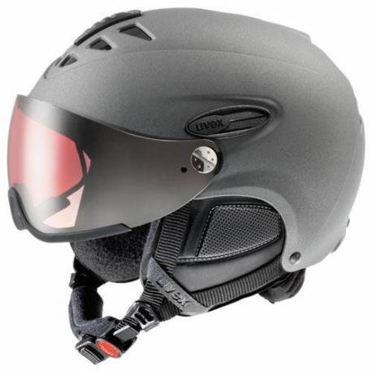
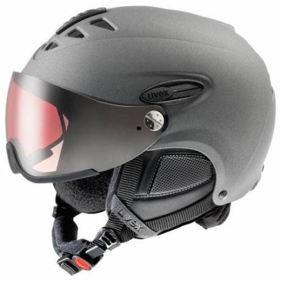

Scopul căștilor de schi este de a reduce șansele de a avea un traumatism cranian în timpul schiului.
Căștile de schi ajută, de asemenea, să asigure căldură capului deoarece acestea constau
dintr-un căptușeală interioară care captează căldura. Căștile sunt disponibile în mai multe stiluri
și, în mod obișnuit, constau dintr-o carcasă din plastic dur / rășină cu căptușeală interioară. Căștile de schi moderne pot include multe
caracteristici suplimentare, cum ar fi guri de aerisire, apărătoare de căști, căști, ochelari de protecție și suporturi pentru camere
Solomon driver+
Uvex hlmt
Solomon spell+

 
